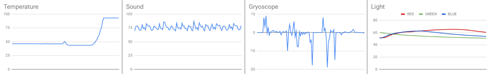

The objective of this project is to traverse space, avoid asteroids, and reach the target destination (the planet).
After setting up the screen, the user will be asked which direction to go (up, down, right, left OR wasd keys).
If the user hits an asteroid, the losing screen will pop up. If the user makes it to the planet, the winning screen will pop up!
1.2.5 Project - Ice Fishing
The objective of this game is to catch as many fish as you can within the time limit.
The starting menu (left image) explains the game to the user and prompts them to enter their name.
After entering their name, there will be random fish, with varying amounts of points, going across the screen for the player to catch.
By using the W and S keys to move up and down, the player will try to catch the fish and add to their score by going up to the surface.
Scratch Project - Make a Cake
In this game, you make a cake from scratch-- mixing ingredients, baking the cake in the oven, and finally decorating it at the end! :D
The user will go through a click adventure game and complete the different steps to making a cake by clicking and interacting with ingredients.
At the end of the game, the user will be evaluated and receive a 0-3 star rating which depends on how well they made the cake without messing up.
1.2.6 Project - A pHishy Fish Tank
In this project, a system breach occured in a great company. So, we were tasked to debug the unexpected errors in the fish tank monitoring system.
To debug the program, we used print statements to check if variables, lists, and conditional expressions were assigned / worked as originally intended.
After identifying the issues, we brainstormed ideas and applied them in order to fix the program-- we did test cases to make sure it worked properly.
4.1.4 Project - Peppered Moths
In this project, we analyzed a simulation model based on the natural selection of peppered moths, specifically in Manchester, from NetLogo.
We first identified the turtles, the patches, and the randomness used in the code to determine what and how the program is simulating the real-world system.
Afterward, we applied our understanding by describing the program's exclusions, brainstormed how to improve the simulation, and listed real-world issues related to the model.
3.1.6 Project - Rover Phone Home

In this project, we had to identify where a lost rover is on an alien plain when given descriptions of 5 distinct locations and a single list of combined data values.
We first had to separate the list of data values into 4 different categories (light, temperature, sound, and gyroscope) and then created 4 graphs.
Then, concluded where the rover is based on the graphs and the description of the regions. We identified that the rover is located in the Desert Plains.